.png)


Reserva tu evento especial
Alta cocina, naturaleza viva y arquitectura campestre en el corazón de Pachacámac.
Tu Historia Comienza Aquí
Imagina decir "Sí, acepto" bajo el cielo azul de Pachacámac, rodeado de jardines que parecen sacados de un cuento. En Jora, no solo organizamos bodas; diseñamos experiencias sensoriales. Desde la suave brisa en nuestra capilla simbólica hasta el último brindis bajo las estrellas.
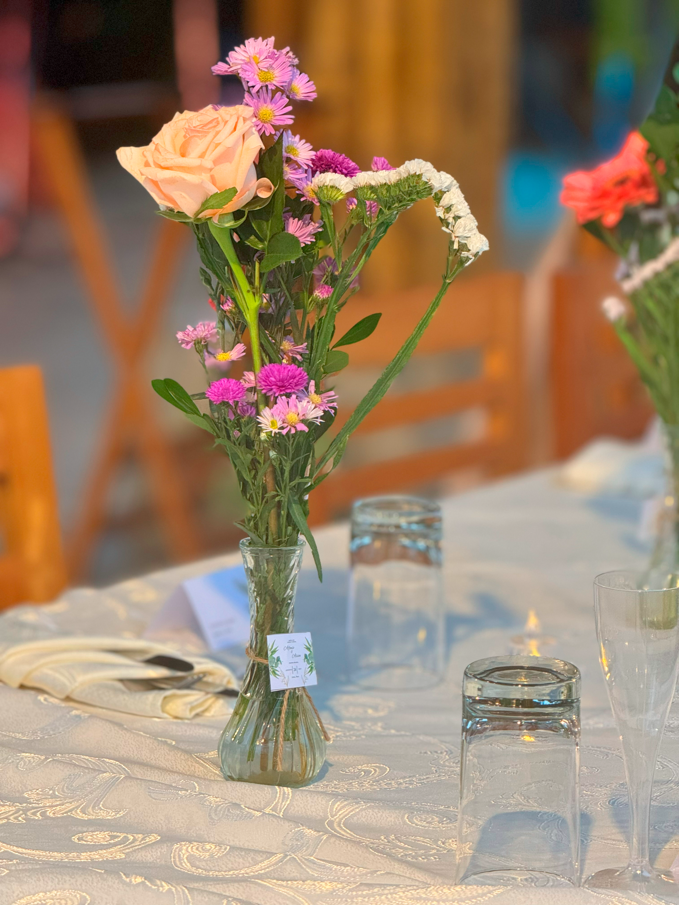
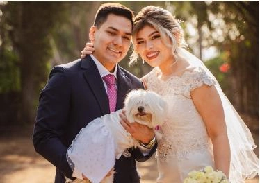
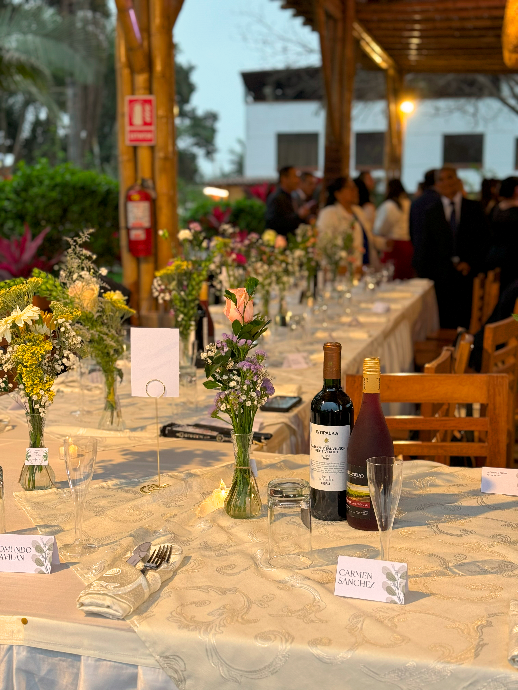
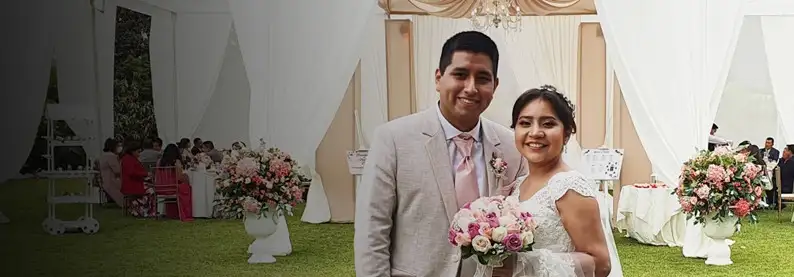
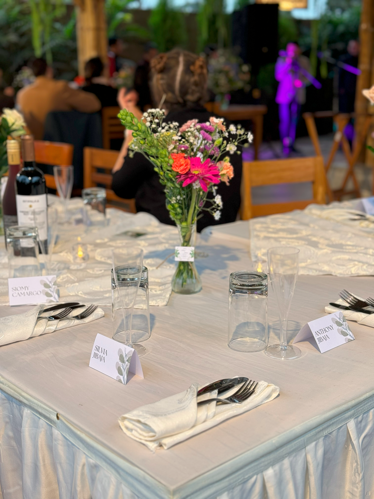
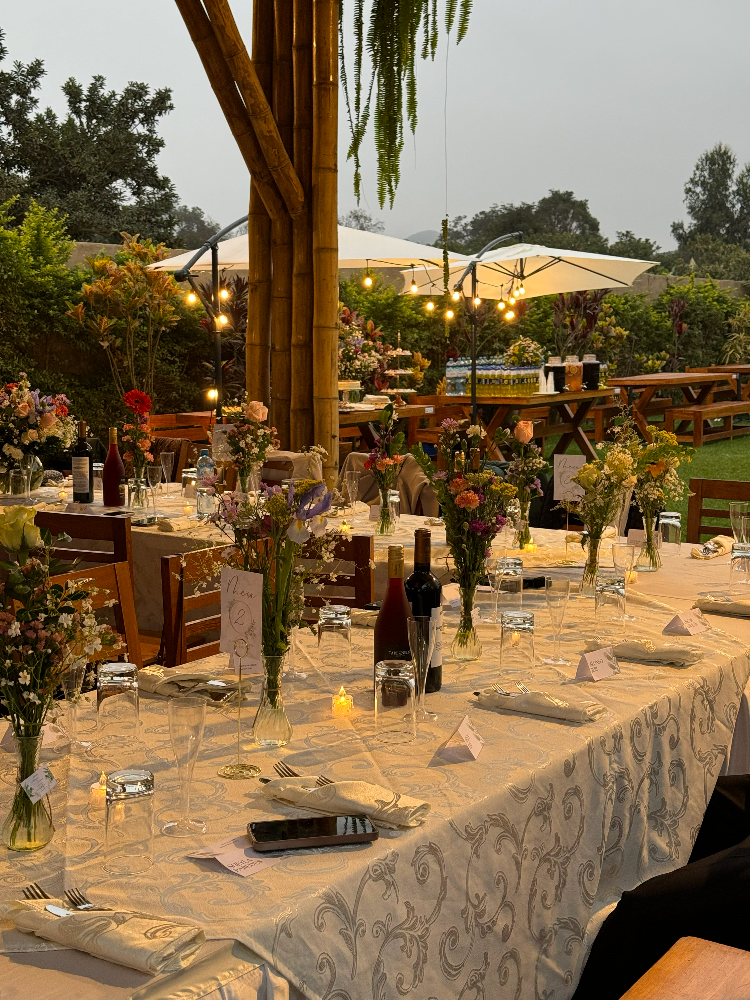
El Arte de Festejar
Olvídate de lo convencional. Ya sea un cumpleaños hito o un aniversario dorado, creamos atmósferas vibrantes donde la alegría es la protagonista. Nosotros ponemos el escenario perfecto, la gastronomía de autor y la coctelería premium; tú solo preocupate por disfrutar.
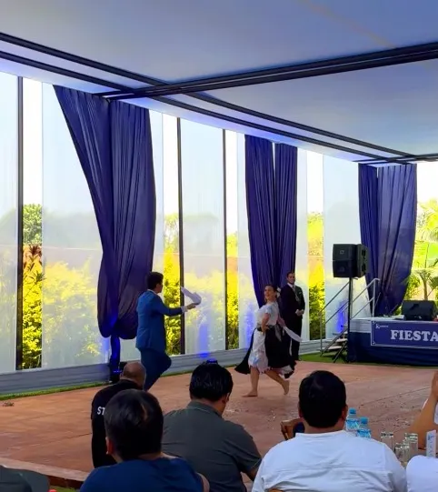
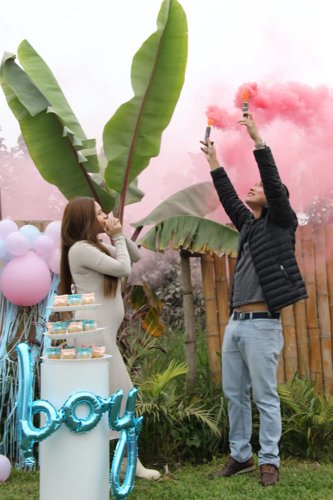
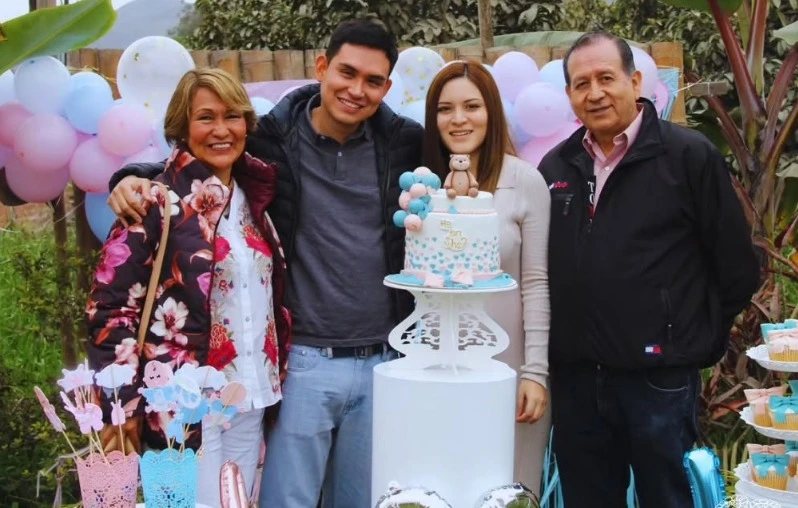
Experiencias Corporativas
Rompe la rutina y eleva el estándar de tus eventos empresariales. Jora ofrece el equilibrio perfecto entre infraestructura ejecutiva y la serenidad del campo. "El lugar donde las grandes decisiones se toman con una copa de vino y aire puro."
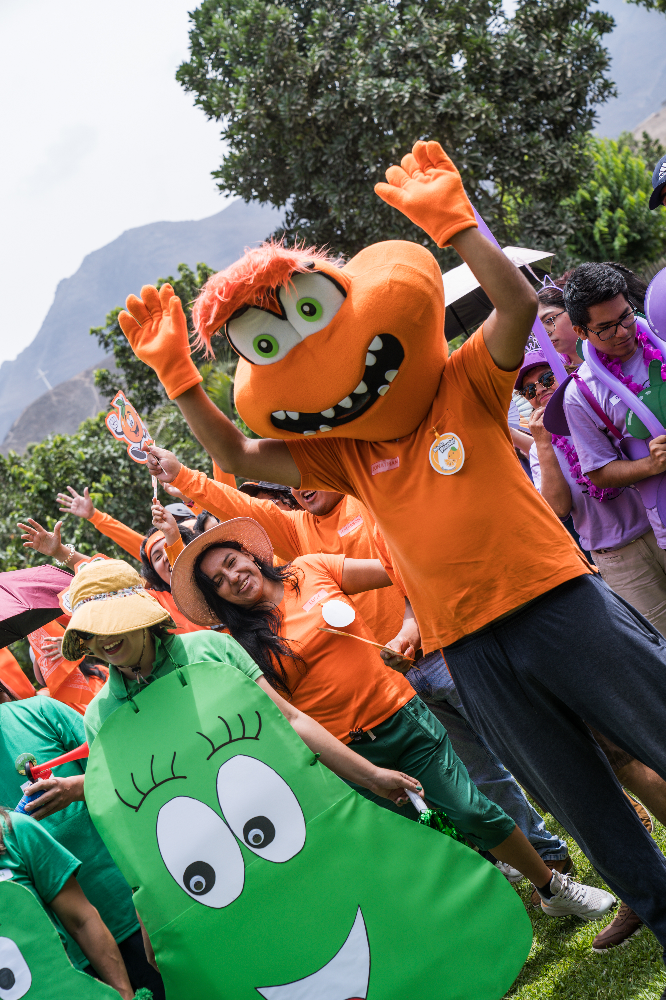

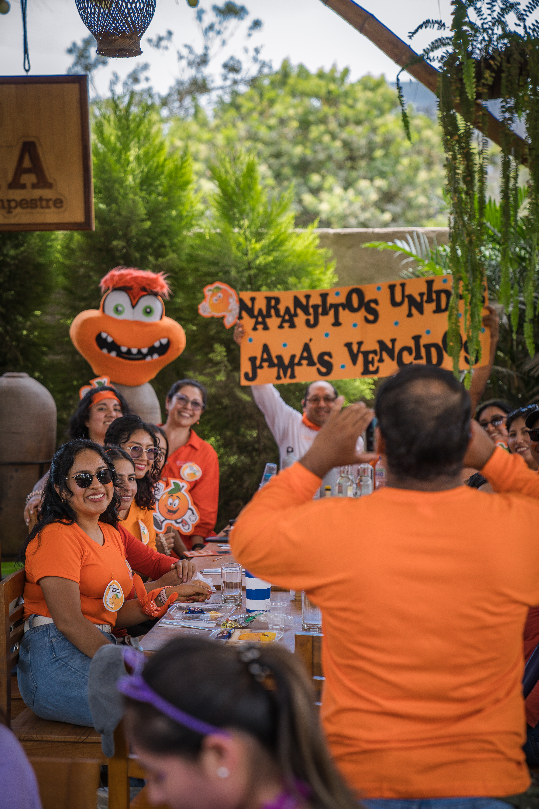
Encuentros que Unen
Jora es más que un restaurante; es un punto de encuentro cultural. Nuestros espacios abiertos se transforman para acoger ferias de arte, talleres de bienestar, teatro al aire libre y shows infantiles mágicos.
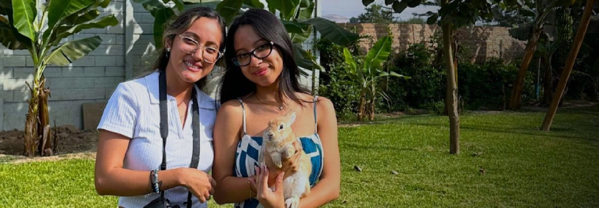
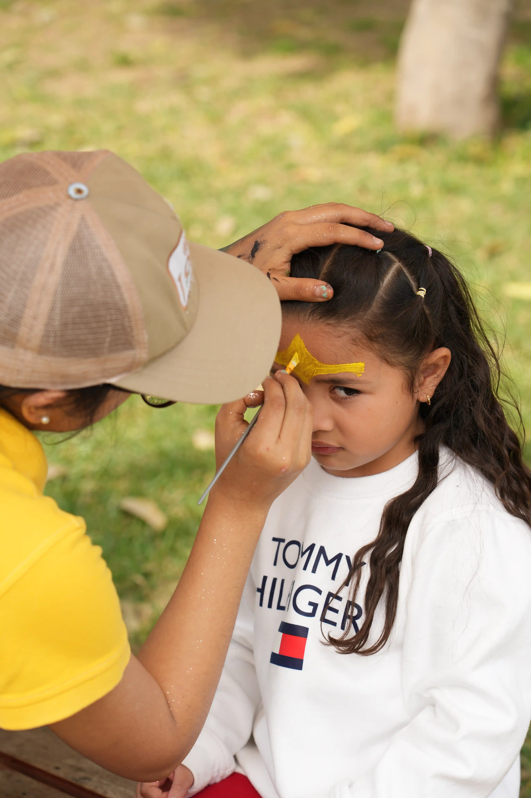